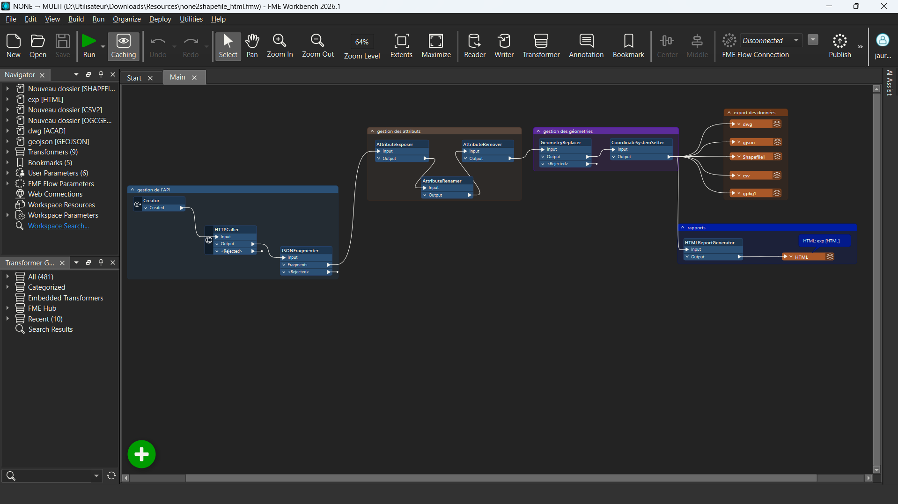
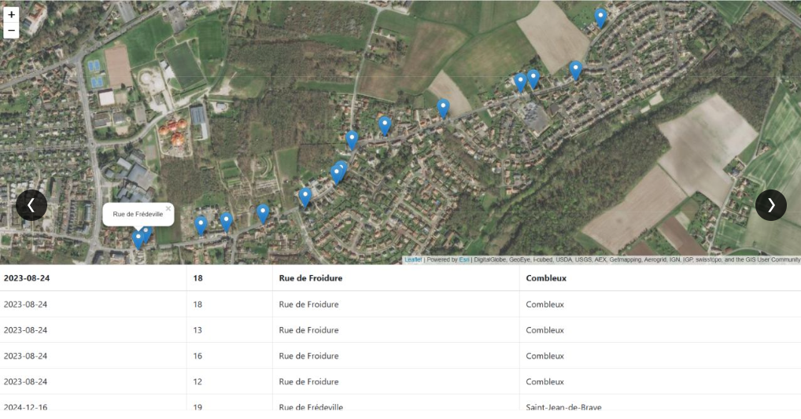

Interopérabilité de données géospatiales · FME Workbench · Mission, 2026
Automatisation de la collecte et de la conversion de données géospatiales avec FME
Un workflow FME transformant une API en exports SIG multi-formats
Contexte et objectif
Diffuser une même donnée géographique sur plusieurs plateformes SIG implique en général de la reformater plusieurs fois à la main : un export pour QGIS, un autre pour un client CAO, un troisième pour un tableur. Répété à chaque mise à jour, ce travail devient vite chronophage et source d'incohérences entre les versions diffusées. L'objectif de ce workflow est d'automatiser, de bout en bout, l'acquisition de données géographiques depuis une API, leur nettoyage et leur export simultané vers plusieurs formats, au sein d'un unique processus FME reproductible.
Démarche et outils
Le workflow est construit sous FME Workbench et s'articule en cinq blocs fonctionnels (gestion de l'API, gestion des attributs, gestion des géométries, export des données et rapports), visibles sur le canevas ci-dessous :
- Connexion à l'API source via le transformer
HTTPCaller. - Extraction et structuration de la réponse JSON avec
JSONFragmenter. - Nettoyage et harmonisation des attributs (
AttributeExposer,AttributeRenamer,AttributeRemover). - Reconstruction des géométries et attribution du système de coordonnées (
GeometryReplacer,CoordinateSystemSetter). - Export simultané vers cinq formats : Shapefile, GeoJSON, GeoPackage, CSV et DWG.
- Génération automatique d'un rapport HTML de traitement (
HTMLReportGenerator), reprenant la localisation des entités sur fond de carte et le détail des attributs.

Résultats
Une fois lancé, le workflow interroge l'API, nettoie et reprojette les données, puis produit en une seule exécution cinq fichiers d'export prêts à l'emploi ainsi qu'un rapport HTML de contrôle, sans aucune manipulation manuelle intermédiaire. Ce type d'automatisation fait gagner un temps considérable sur les mises à jour récurrentes et garantit surtout la cohérence des données diffusées sur les différentes plateformes SIG : un même jeu de données ne peut plus diverger d'un export à l'autre, puisque tous proviennent de la même chaîne de traitement. L'intérêt de FME tient précisément à cette capacité à centraliser l'ensemble de la chaîne, de la collecte à la diffusion, au sein d'un processus unique, visuel et facilement maintenable.
